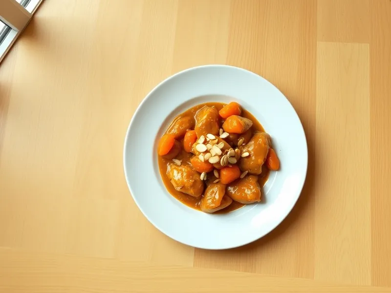

Тажин из курицы с курагой по-мароккански
Куриные бёдра, томлённые с курагой, мёдом и пряностями, с жареным миндалём
75 мин4 порц.708 ккал на порциюБ 48 · Ж 43 · У 33Средиземноморская кухня
Открыть в приложении: порции, таймеры, список покупок
Продукты на 4 порц.
- Куриные бёдра8 шт
- Курага150 г
- Лук репчатый3 шт
- Чеснок2 зуб.
- Корица1 ч. л.
- Зира1 ч. л.
- Куркума1 ч. л.
- Мёд1 ст. л.
- Миндаль40 г
- Оливковое масло2 ст. л.
- Вода1,5 стак.
- Соль1,5 ч. л.
Как готовить
- Посолите бёдра и обжарьте на масле в толстостенной кастрюле кожей вниз на среднем огне 8 минут до золотистой корочки. Переложите на тарелку.
- В том же жире обжарьте лук полукольцами 8 минут до мягкости, добавьте чеснок, корицу, зиру и куркуму и прогрейте 1 минуту.
- Верните курицу, влейте горячую воду, накройте и томите на слабом огне 30 минут.
- Добавьте курагу и мёд и томите ещё 15 минут, пока курица не станет мягкой, а соус густым.
- Обжарьте миндаль на сухой сковороде на среднем огне 3 минуты до аромата и посыпьте им блюдо перед подачей.
Совет. Если соус получился жидким, снимите крышку на последние 10 минут: он уварится и станет глянцевым.